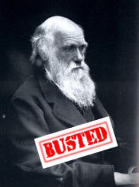

| Feature Article - April 2008 |
| by Do-While Jones |
This is our annual special issue celebrating National Theory of Evolution Day (April 1), in which we give the theory of evolution all the respect that it deserves.
Don't ask us how we obtained this script for an episode of MythBusters that the Discovery Channel refused to air!
Narrator: Each week on MythBusters, Adam, Jamie and their team, take apart urban myths piece by piece to get to the truth.
Jamie Hyneman: What myth are we testing this month?
Adam Savage: The theory of evolution.
Jamie: But the theory of evolution isn't a myth--it's a fact.
Adam: Well, that's what lots of people think; but lots of people think it is a fact that you can blow up a gas station by talking on a cell phone. That's why we "not only tell the myths, we put them to the test!"
Jamie: There are three parts to the myth of evolution. First, life happens. Second, life slowly transforms. Third, there is enough time for the first two things to happen.
Adam: That's right; and I think we should test each part separately. Let's start with the origin of life.
Jamie: That's going to be a tough one. Ever since Stanley Miller produced a few organic compounds in 1953, scientists have been trying to produce an environment that will cause life to form naturally without success. Stanley Miller himself spent his whole career of more than 50 years, right up to his death, working on the problem. He never found a plausible way life could have begun. 1
Harvard is spending one million dollars over the next few years because "some mysteries about life's origins cannot be explained." 2 The Origin of Life Foundation's one million dollar prize 3 has remained unclaimed since 1997, despite all the work done by countless scientists to discover a natural process by which life could begin. It seems unlikely that we will be able to produce life from non-life in time for the next episode's air date with the puny budget the Discovery Channel gives us!
Adam: But can't we at least try something involving a lot of hydrogen and methane gas and a spark?
Jamie: We already did that on our Hindenburg and port-a-potty episodes. I'm not sure our viewers want to see another big hydrogen or methane explosion if it doesn't produce life.
Adam: But we have to produce life from non-life spontaneously, or the myth is busted right off the bat.
Jamie: Not necessarily. We can just say that if we had enough time, money, and the right conditions, we could produce life naturally. Then we can go on to step 2.
Adam: But isn't that cheating?
Jamie: It isn't cheating when scientists do it! If we say it could happen, then it could happen. We're what you call, "professionals." It's as simple as that.
Adam: OK. We will skip step one and go on to step two. Let's create a new species by causing some mutations. Let's use massive doses of radiation to create new forms of life.
Jamie: Well, we sort of already tried that. Remember when we tested the myth that cockroaches would be the only survivors of a nuclear war? We zapped several kinds of insects with massively lethal doses of radiation. Most of them died, but a few survived.
Adam: Yes, and as soon as the cameras stopped rolling, we stepped on the few surviving bugs. We didn't give them a chance to reproduce. Who knows what would have happened to their offspring?
Jamie: Well, I suppose we could try again, but that's another "been-there-done-that" sort of thing. Scientists have been radiating generations of fruit flies. They get fruit flies with extra wings, or extra legs, and lots of stillborn fruit flies, but they have never produced a butterfly, or anything other than a defective fruit fly. But, given enough time, and the proper conditions, I'm sure we could create a new species somehow.
Adam: That still sounds like cheating to me.
Jamie: Trust me, I'm a doctor.
Adam: So, are we going to prove the myth by creating a new species or not?
Jamie: I don't think we can.
Adam: What if we built a computer-controlled robot? We could then make random changes to its program and see if it works better.
Jamie: No, there's too much design in that approach. We have to design the basic robot to begin with. Then we have to make random changes intentionally. That's nothing more than stupid design by trial and error.
Adam: But there must be some way we can modify genitals to produce mutant offspring.
Jamie: Do you want to do that experiment with the electric fence again? This time we could use something more conductive than a urine stream and see what electricity does to sperm cells.
Adam: That's what I'm talking about! The electric fence episode was so gross and vulgar that our ratings went through the roof!
Jamie: Time is the problem again. We don't have nine months to see how it affects the offspring. We will have to use mice, or some other laboratory animals that reproduce rapidly.
Adam: No, we can't use mice. We can do all sorts of painful things that humiliate ourselves, but the animal rights people won't let us do the same things to mice.
Jamie: Then it's not looking good for this myth. It is already busted on two counts. We can't create life and we can't change living things into other kinds of living things. But we have an hour show to fill, and in true MythBuster tradition, we will press on even after the myth is busted.
Adam: So what do we do next?
Jamie: We need to prove that the Earth is billions of years old.
Adam: Well, there's David Letterman and Larry King. They are billions of years old, aren't they?
Jamie: Millions, maybe, but not billions.
Adam: OK, then, let's look at the salt in the oceans, helium in the air, or sediments in the Gulf of Mexico to see how old the Earth is.
Jamie: We could, but there are two problems with that.
Adam: Like what?
Jamie: Well, first, that would be analysis rather than experimentation.
Adam: What's wrong with analysis?
Jamie: Nothing. We do analysis all the time on this show, but only as preparation for setting up our experiments. We do the analysis to know what to expect. But analysis isn't perfect. The accuracy is only as good as our assumptions. If we make the wrong assumptions, or overlook something, the analysis won't give us the right answer. Remember the analysis we did regarding how many ping pong balls we would have to force down into a sunken ship in order to float it to the surface?
Adam: OK, so we messed up badly on that one. We used the dry weight of the ship instead of the submerged weight of the ship, and neglected buoyancy. But most of the time our analyses and small scale tests are pretty good.
Jamie: "Most of the time" isn't good enough. That's why we do the experiments to see if our analysis is correct. But there is a second problem with analyzing the three things you suggested.
Adam: What's that?
Jamie: Using reasonable assumptions, the things you mentioned (salt in the sea, etc.), indicate that the Earth is nowhere near 4.6 billion years old. Measuring current processes, and extrapolating back in time, rarely, if ever, give an age of the Earth that is old enough for evolution to have taken place.
Adam: Well then, why not use radioactive dating?
Jamie: That's still an analysis that depends upon unverifiable assumptions. 4
Adam: It looks like the myth of evolution is going to be a hard one to confirm. For more than fifty years many outstanding scientists have tried to find environmental conditions that will produce life, without success. Scientists have seen mutation and selection produce slightly different varieties of existing species, but have never seen them produce a new kind of creature. This has had to happen countless times in the past to produce all the different kinds of creatures that have ever lived on Earth if the myth is true, and yet we've never observed it to happen in nature or in the laboratory. Finally, there is no foolproof way to tell how old the Earth is. All age measurements depend on some assumptions that can't be verified. There's really nothing we can do.
Jamie: Well, we've got to do something for this episode. Let's drop some more Menthos candies in a Diet Coke and let it squirt on the camera man. That's always good for a laugh.
Adam: This is the most disappointed I've been since Episode 2, when we failed to blow up a gas station by chatting on a cell phone while pumping gas.
Jamie: So, how do we call this myth?
Adam: We can't scientifically confirm any part of the myth. I think we have to say it is totally busted!
Jamie: Yes, totally busted.

| Quick links to | |
|---|---|
| Science Against Evolution Home Page |
Back issues of Disclosure (our newsletter) |
| Web Site of the Month |
Topical Index |
Footnotes:
1
Disclosure, June 2007, "Stanley Miller's Final Word"
2
Disclosure, August 2005, "Looking For Life"
3
http://www.lifeorigin.org/
4
Disclosure, July 2000, "Radioactive Dating Explained"